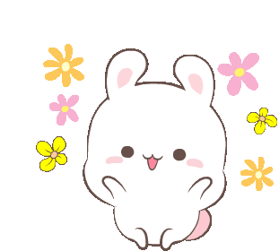
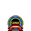

Minha coelhinha faz 22 anos

Since 28 de outubro de 2000
Oi meu amor! Feliz aniversário. Não consigo acreditar que já faz mais de dois anos que nos conhecemos. Parece clichê, mas ao passo que esses anos se passaram super rápidos, tenho a sensação que te conheço desde a infância. Já não consigo mais imaginar minha vida sem você, não tem nada que eu planeje para meu futuro onde você não esteja ao meu lado. Espero te fazer tão bem quanto você me faz bem.
Infelizmente, estamos passando seu aniversário longe um do outro. Durante meses eu imaginei como seria essa comemoração, mas em nenhum dos meus planos imaginei estar com tamanha distância física entre nós. Mas, durante esse tempo difícil, você mostrou novamente a namorada incrível que é, sempre me dando atenção e carinho. Mesmo longe, penso em você todos os minutos do meu dia. Sinto sua falta e espero te ver logo, te amo muito.
- Renata "Coelhinha", 28 de outubro de 2022
Renatinha é uma futura policial da PRF, mãe de memel, namorada incrível e cantora de chuveiro nas horas vagas, com apenas seus 22 anos. Todo o seu poder está concentrado em seu tamanho compacto a fazendo canalizar mais suas energias, por isso também não sera a mulher mais calma que ira conhecer. Coelhinha para os mais íntimos gosta de passar o tempo livre ouvindo suas sofrências, dançando seus forrozinhos e desenhando suas obras que deixariam qualquer artista chorando de inveja. Mesmo após sua cirurgia ocular tem um forte problema na visão que a impede de ver a grande gostosa que é, mas Itinho esta aqui para isso.

Aqui veremos 1% dos incríveis dos momentos em que Renatinha se provou a mais radical.
Aqui temos uma demonstração de sua radicalidade quando quer passar o tempo, equilíbrio, foco e vitória definem Renatinha.
Mas nem nossa guerreira consegue escapar de ferimentos, cuidado que ai vai algumas de suas cicatrizes que marcam sua história.
Assustador eu sei...
Porém, nem só de momentos radicais vive Renatinha.
Podemos observar que nossa grande “não de tamanho” Renatinha adora apreciar uma cana.
E não importa o quanto ela beba, jamais ficara bebada
"Renatinha não fica bebada, Renatinha sente a rotação da terra"
Italo Lispector 2k22
Preparem seus corações com tamanha fofura
As pessoas pensam "nossa como ela é radical e da farra", mas mal sabem que por trás de toda essa vida loka existe um nenem.
Mas é muito fofinha né gente *-*
Um nenem fits... as vezes
Não é porque nossa Renatinha é um nenem que a vida fit não faz parte dela
OLHA O FOCO E A ALEGRIA DESSA GUERREIRA
É... ninguem é de ferro né hehe
Para terminar de apaixonar quem estiver lendo
Mas esse princesa ja tem seu par em 🤨, tira o zoi


Gostaria poder dizer que essas são minhas fotos favoritas... mas é tão bela, minha musa que nunca conseguiria escolher uma foto só.